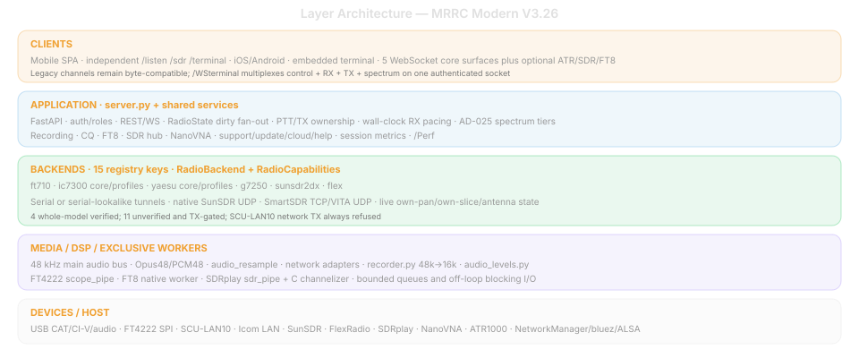

1. Executive Summary
1.1 Project Overview
MRRC Modern (mrrc_modern) is a mobile-first remote radio and receiver system. A Python FastAPI/Uvicorn service connects browsers, native mobile clients and embedded terminals to a selected radio through a pluggable backend. The same service provides control, bidirectional audio, spectrum/waterfall, metering, memories, server-side recording, one-touch CQ, FT8, listen-only and public SDR roles, box administration, diagnostics and optional antenna instruments.
The backend registry contains 15 model keys. FT-710, IC-7300, IC-7300MK2 and FT-991A are hardware-verified at the whole-model level. IC-705/7610/7760, FTDX10, FTDX101D/MP, FTX-1F, FT-891, G7250, SunSDR2 DX and FlexRadio remain verified=false; some have substantial receive-path field evidence, but key-up stays behind AD-019 until the remaining acceptance work closes. flex deliberately covers the SmartSDR family through radio-reported capabilities rather than a per-model branch.
The product no longer assumes that a radio means a serial port plus a USB sound card. FT-710 uses ASCII CAT and an FT4222 subprocess; Icom and Xiegu use the shared CI-V core; Yaesu uses a profile-driven ASCII-CAT core; SCU-LAN10 and G7250 place serial-lookalike CI-V/CAT tunnels below those unchanged controllers; SunSDR2 DX and FlexRadio own native network sessions and server-side audio/spectrum adapters.
1.2 Current Design Goals
| Goal | Target | Current Evidence |
|---|---|---|
| Mobile-first operation | Phone/desktop browser, native clients and constrained terminals | static/, FT710Mobile/, FT710Android/, /WSterminal |
| Honest radio control | Capabilities and tables come from the selected backend; unknown hardware remains TX-gated | backends/, AD-016/018/019/033/035/036/037 |
| Real-time spectrum | One stable 850-bin WS contract over SPI, CI-V, SCU-LAN10, SunSDR or Flex sources | scope_handler.py, spectrum_profile.py, backend scope adapters |
| Bidirectional audio | 48 kHz internal codec domain with explicit backend boundary conversion | audio_handler.py, audio_resample.py, network audio adapters |
| Safe PTT handling | Independent key-up refusal, ownership, release, heartbeat and shutdown layers | Chapter 15 |
| Field operability | Box setup, networking, local controls, updates, support bundles and observable load | /setup, /settings, /Perf, support_bundle.py |
| Protocol continuity | Legacy clients retain their byte contracts; new capabilities are negotiated per socket | AD-024/025/038/039 |
1.3 Implemented Core Features
| Feature | Status | Description |
|---|---|---|
| Control WebSocket | Implemented | /WSradio: fullState, dirty state updates, set/get, memory, recording, CQ and safety messages |
| Single-socket terminal | Implemented | /WSterminal multiplexes control, RX, TX and spectrum; /terminal is a self-contained reference page (AD-039) |
| RX/TX audio | Implemented | Tagged Opus48/PCM48 over the legacy endpoints; backend-specific USB or network adapters; negotiated sockets additionally carry 0x02 PCM16 (16 kHz mono, AD-038) |
| Spectrum | Implemented | 1701 B full or 851 B short frames, per-socket AD-025 tiers; real sources plus an S-meter fallback that suppresses identical frames |
| Backend polling | Implemented | Seven adaptive tiers, priority-command preemption, baud-cost pacing and reconnect synchronization |
| Recording and CQ | Implemented | Incremental 16 kHz mono MP3 with disk guards; finite server-side CQ playback through the normal PTT/TX path |
| FT8 | Implemented | 15 s engine, 12 kHz RX tap, native per-platform DSP, fast decode plus adaptive deep cascade |
| Memory and authentication | Implemented | JSON memories; persistent 30-day operator/listen sessions; SDR has a separate password and cookie |
| Public receive roles | Implemented | /listen for the selected radio; /sdr for an independently shared SDRplay receiver |
| Box and instruments | Implemented on supported Linux boxes | LAN onboarding, Wi-Fi/Bluetooth, local HID control/speaker, /Perf, /Nano, remote help and Cloud Hub state |
| Support and updates | Implemented | Redacted support bundles, answer/board workflow, manifest checks and platform/box update paths |
1.4 Architecture Layers

1.5 Current Project Status
As of 2026-11-17, the released box line is v1.28.86 · FP73 and includes the AD-039 terminal endpoint. The architecture is a single application process plus narrowly scoped native/device workers: FT4222 scope, FT8 DSP and optional SDRplay. Network backends share the same server contracts rather than introducing browser-specific branches.
Hardware evidence is tracked per model and per path, not inferred from a successful login or a green offline suite. In particular, FlexRadio RX/FFT/antenna behavior and SCU-LAN10 CAT/RX/scope have real-radio measurements, while their overall verified flags remain false; SCU-LAN10 TX is unconditionally refused because its TX audio frame is unknown. PCM16 (0x02) and the further Flex receive-hardening design are future implementation work and are not described as shipped behavior.